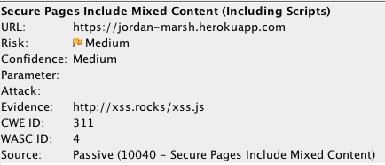
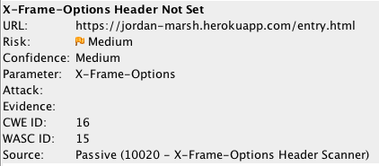
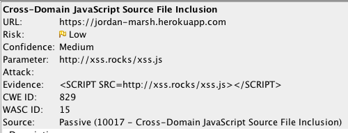
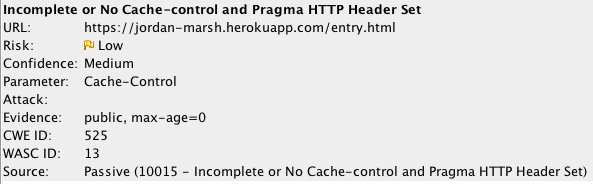
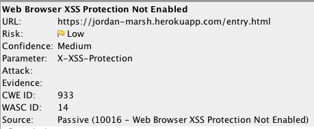
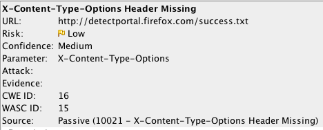

I have been hired as a security consultant to assess, document, and resolve any security or privacy issues that exist in a web application. The given web application allows users to enter a login, latitude, and longitude, and then submit the provided fields. Once submitted, they are offered to visit the home page, which contains a list of all recent users who have submitted their information through the form along with the login, latitude, and longitude that they provided. The web application is composed of only two files, server-vuln.js and package.json.
Before I performed a penetration test on the product, I reviewed the source code to gain an initial understanding of the code and note any potential risks. Once I understood what I would be working with, I selected a tool capable of scanning the application for vulnerabilities. I used OWASP ZAP to perform a pen test on this application. OWASP ZAP is an open source web application security scanner which can perform a vulnerability scan on any web application by entering its URL. In pen testing, I entered the URL “https://jordan-marsh.herokuapp.com”, which is the home page of the website. A discussion of the results of this scans may be found below.
The analysis of the web application yielded six alerts. The individual alerts are listed blow, each with a brief description:
Issue: Secure Pages Include Mixed Content (Including Scripts)
Location: https:/jordan-marsh.herokuapp.com
Severity: Medium. Risk severity is calculated by multiplying the Likelihood * the Impact of the issue. This issue is deemed medium risk because it could result in a loss of confidentiality, a loss of integrity, a loss of availability, and a loss of accountibility of data, and it is moderately likely.
Description: This issue was found using OWASP ZAP. See screenshot below.
Proof of Vulnerability:

Resolution: Always use https:// URLs when loading resources on your page, not http:// URLs.
Issue: X-Frame-Options Header Not Set
Location: https:/jordan-marsh.herokuapp.com/entry.html
Severity: Medium. Risk severity is calculated by multiplying the Likelihood * the Impact of the issue. This issue is deemed medium risk because it could result in a loss of confidentiality, a loss of integrity, a loss of availability, and a loss of accountibility of data, and it is moderately likely.
Description: This issue was found using OWASP ZAP. See screenshot below.
Proof of Vulnerability:

Resolution: Set the X-Frame-Options header to 'DENY', "SAMEORIGIN', or 'ALLOW-FROM {uri}'.
Issue: Cross-Domain Javascript Source File Inclusion
Location: https:/jordan-marsh.herokuapp.com
Severity: Low. Risk severity is calculated by multiplying the Likelihood * the Impact of the issue. This issue is deemed low risk because it could result in a loss of confidentiality, a loss of integrity, a loss of availability, and a loss of accountibility of data, but it is not very likely.
Description: This issue was found using OWASP ZAP. See screenshot below.
Proof of Vulnerability:

Resolution: Never load JavaScript scripts from untrusted sources.
Issue: Incomplete or No Cache-control and Pragma HTTP Header Set
Location: https:/jordan-marsh.herokuapp.com/entry.html
Severity: Low. Risk severity is calculated by multiplying the Likelihood * the Impact of the issue. This issue is deemed low risk because it could result in a loss of confidentiality, a loss of integrity, a loss of availability, and a loss of accountibility of data, but it is not very likely.
Description: This issue was found using OWASP ZAP. See screenshot below.
Proof of Vulnerability:

Resolution: Set the cache-control header to 'no-cache, no-store, must-revalidate, private' and set the Pragma header to 'no-cache'.
Issue: Web Browser XSS Protection Not Enabled
Location: https:/jordan-marsh.herokuapp.com/entry.html
Severity: Low. Risk severity is calculated by multiplying the Likelihood * the Impact of the issue. This issue is deemed low risk because it could result in a loss of confidentiality, a loss of integrity, a loss of availability, and a loss of accountibility of data, but it is not very likely.
Description: This issue was found using OWASP ZAP. See screenshot below.
Proof of Vulnerability:

Resolution: Enable the browser's XSS Protection filter by setting the X-XSS-Protection HTTP response header to '1'.
Issue: X-Content-Type-Options Header Missing
Location: http://detectportal.firefox.com/success.txt
Severity: Low. Risk severity is calculated by multiplying the Likelihood * the Impact of the issue. This issue is deemed low risk because it could result in a loss of confidentiality, a loss of integrity, a loss of availability, and a loss of accountibility of data, but it is not very likely.
Description: This issue was found using OWASP ZAP. See screenshot below.
Proof of Vulnerability:

Resolution: Set the X-Content-Type-Options header to 'nosniff' for all web pages.
Many of the security/privacy issues detected by the OWASP ZAP scanner are low risk and can be fixed simply by adding Headers to html files. By satisfying the suggested resolutions for each issue above, this web application will be much more secure and any attacks will be far less likely. Furthermore, we recommend that you scan your web applications for vulnerabilities at least once a month, to ensure that any changes in the source code do not negatively impact the security of the application.